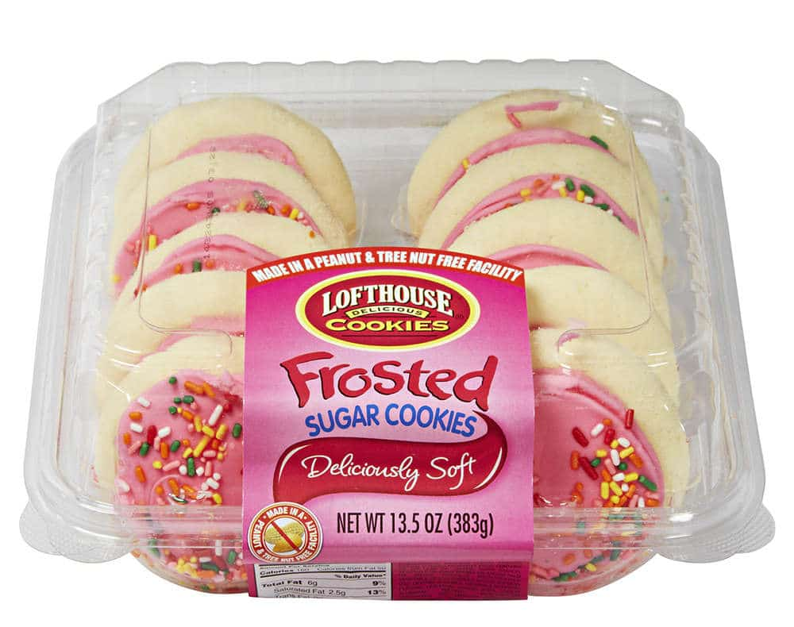

GO BACK
Bragging Rights Chocolate Chip Cookies Recipe
The type of cookies you make and then act mysterious about when someone asks you for the recipe...go into a long rant reminiscent of overly-long recipe descriptions in an attempt to confuse the person asking for the recipe

Unrelated image but unironically these used to slap tf did they do to the recipe they're janky now???
K-On is an early 2000s anime about the anti- nah I'm just fucking with you this recipe is for cookies. Specifically, these cookies are decent to bring to a function or other social gathering because most cookies at said events tend to be either A, store bought and not good, or B, homemade but homemade by someone who calls themselves ~ a baker ~ but in actuality is a shitty, messy cook who doesn't properly measure their ingredients and doesn't know how to make a decent buttercream. Bring these cookies in 3 batches (one normal, one softer, and one crispy) and a decent chunk of people will come up to you and say something along the lines of "These are the best cookies I've ever had," etc.
Ingredients
- 1 cup butter, softened
- ¾ cup packed brown sugar
- ¼ cup white sugar
- 1 (3.5 ounce) package instant vanilla pudding mix
- 2 large eggs
- 1 teaspoon vanilla extract
- 2 ¼ cups all-purpose flour
- 1 teaspoon baking soda
- 2 cups semisweet chocolate chips
Directions
- Begin by preheating the oven to 375 degrees F (190 C)
- Cream butter and sugars in a large mixing bowl.
- Add in pudding mix, eggs, and vanilla extract.
- In a separate bowl, combine flour and baking soda using a fork. Slowly add to liquids bowl and mix with a rubber spatula until just combined.
- Fold in chocolate chips.
- Drop heaping tablespoons of cookie dough onto parchment paper or rubber baking mats. Bake for 10 to 12 minutes or until golden brown. Really, 10 minutes will have them be pretty soft, so do that for the soft batch. 12 minutes for the "normal batch," and like 13-14 for the crispier ones.

This, but imagine the toast is the cookies or smth idk